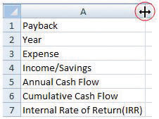

Projects that purport to save money or earn additional money in the future as a result of spending money now can be evaluated and compared using basic financial tools. A simple payback analysis determines how long it will be before the result of the project pays off the initial investment, and the Internal Rate of Return (IRR) is a percentage similar to an interest rate that can be compared to other projects or investment opportunities.
Start Excel 2007. In cells A1 through A5, type Payback and Internal Rate of Return, Year, Expense, Income/Savings, Annual Cash Flow, Cumulative Cash Flow, and Internal Rate of Return (IRR). Drag the boundary between column A and B to the right to increase the width of column A, as shown in Figure 7.14 "Widen Column to Fit Labels".
Figure 7.14 Widen Column to Fit Labels
In cell B2, type 0, and in cell C2, type 1. Click and drag across cells B2 and C2 to select them both. Identify the fill handle at the lower right corner of C2 as shown in Figure 7.15 "Use Fill Handle to Extend a Pattern of Intervals". Selecting the first two numbers in a sequence determines the interval of the sequence.
In cell C3, type $(2,000) and then press Enter. Click cell C3 again to select it. Drag the fill handle to the right to cell H3. Because a single value was selected, the same value is filled into cells D3 through H3, as shown in Figure 7.16 "Initial Expense in Year Zero Followed by Annual Expenses".
Click cell B5 and then drag the fill handle to cell H5 to fill this formula into the adjacent cells. The formulas adapt to their new locations to add the two cells immediately above. Click cell D5 to observe how the formulas change to sum the cells above, as shown in Figure 7.17 "Formula to Calculate a Running Total".
Click cell C6 and then drag the fill handle to cell H6. Observe from the change in color or from the missing parentheses that the cumulative cash flow becomes positive in year five, as shown in Figure 7.18 "Initial Investment Paid Back in Year Five".
In cell B7, type =IRR(B5:H5) and then press Enter. The spreadsheet program uses a built-in program named IRR to calculate the internal rate of return using the annual cash flows in cells B5 through H5 and determines the rate of return is 10 percent, as shown in Figure 7.19 "IRR Can Be Used to Choose between Very Different Projects". Notice that the IRR function uses the annual cash flows in row 5 and not the cumulative cash flow in row 6.
Click cell A1. Type Payback and Internal Rate of Return and then press Enter. Click and drag cells A1 through H1 to select them. On the ribbon, in the Alignment group, click the Merge and Center button. The new title is centered across the columns, as shown in Figure 7.20 "Center the Title". This worksheet can be used and extended to determine simple payback and IRR for a variety of projects.
Review your work and use the following rubric to determine its adequacy:
| Element | Best | Adequate | Poor |
|---|---|---|---|
| File name | Ch07FinanceStudentName.doc | Ch07FinanceStudentName.docx | Other name |
| Use a spreadsheet to calculate cash flow, payback, and Internal Rate of Return (IRR) | Screen capture of spreadsheet after the value in B3 is changed to negative $90,000, with cell B7 selected to show the IRR function on the toolbar | Same as Best | Incorrect formulas; incorrect range for the IRR function; negative numbers not formatted; name not shown |